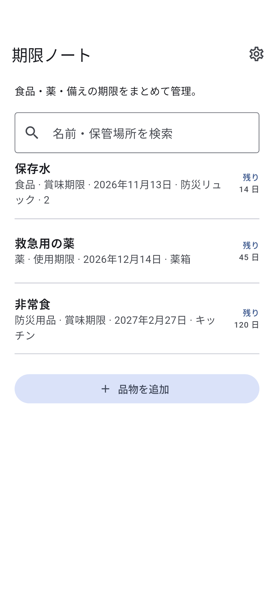

HOW IT WORKS
このアプリについて
01
品物の名前と日付を登録
02
期限の種類を選ぶ
03
近い期限から確認
このアプリについて
- 品物の種類
- 食品 · 薬 · 防災用品 · その他
- 保管場所（任意）
- 名前・保管場所を検索
- 期限の種類
- 賞味期限 · 消費期限 · 使用期限
プライバシー
登録した情報は端末内に保存。インターネットに接続できないときも確認できます。
端末に保存されたデータは、アプリの削除や端末の故障で失われる場合があります。
登録した情報はこの端末に保存されます。広告では広告事業者によるデータ利用が生じる場合があります。
期限は品物に記載された内容を確認してください。